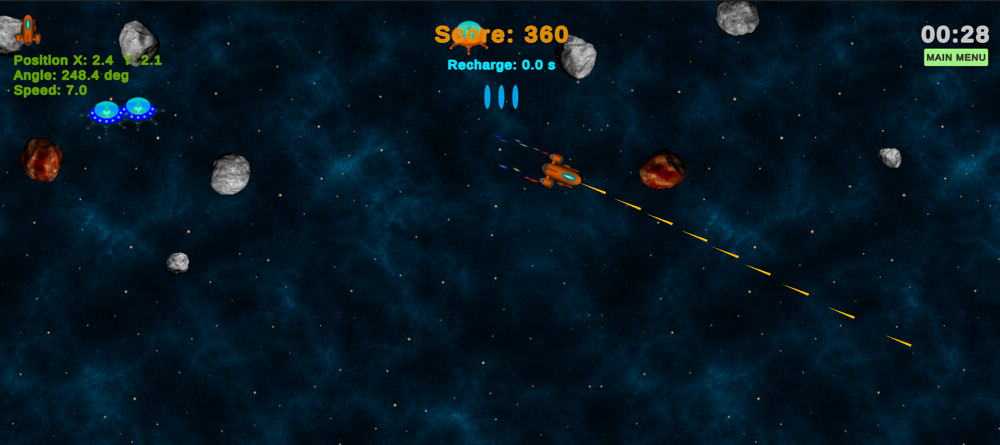

01 · Architecture & delivery
2D Asteroids Survival
A playable Unity survival game used to demonstrate dependency direction, scene composition, gameplay lifecycle, and asynchronous navigation.
- Zenject composition roots connect Core contracts, Infrastructure, Gameplay, and UI without runtime service lookup.
- SignalBus subscriptions and UniTask scene transitions have explicit initialization, teardown, and duplicate-action guards.
- Game-over flow is split between session rules, a ViewModel, and a Unity view instead of a single scene controller.